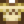

Coffee
| Coffee | |||||
| It smells delicious. This is sure to give you a boost. | |||||
| Information | |||||
| Source | Keg • The Saloon • SquidFest festival • Desert Festival • Mystery Box • Coffee Maker | ||||
| Buff(s) | |||||
| Buff Duration | |||||
| Energy / Health |
|
||||
| Sell Price | |||||
| Crafting | |||||
| Equipment | |||||
| Processing Time | |||||
| Ingredients | |||||
Coffee is a drink made by placing 5 Coffee Beans inside a Keg, or purchased at the Stardrop Saloon for  300g. At the Night Market, one free cup of coffee per night can be obtained from the Desert Trader. Coffee is sold at the Desert Festival in George's and Harvey's shops. One Coffee is a reward for submitting an Egg Rating of 5-9 to Gil during the Desert Festival. If the player owns a Coffee Maker, they can acquire one free cup of coffee every morning. 1-2 Coffee may occasionally be found in Supply Crates on the Beach Farm if the player has not upgraded the Farmhouse yet. 3 Coffee is a guaranteed gold tier reward on the 12th for the SquidFest festival. Wearing a Hot Java Ring gives a 25% chance for monsters to drop Coffee when killed. Three Coffee may be received from opening a Mystery Box.
300g. At the Night Market, one free cup of coffee per night can be obtained from the Desert Trader. Coffee is sold at the Desert Festival in George's and Harvey's shops. One Coffee is a reward for submitting an Egg Rating of 5-9 to Gil during the Desert Festival. If the player owns a Coffee Maker, they can acquire one free cup of coffee every morning. 1-2 Coffee may occasionally be found in Supply Crates on the Beach Farm if the player has not upgraded the Farmhouse yet. 3 Coffee is a guaranteed gold tier reward on the 12th for the SquidFest festival. Wearing a Hot Java Ring gives a 25% chance for monsters to drop Coffee when killed. Three Coffee may be received from opening a Mystery Box.
When consumed, it grants the player +1 Speed for 1m 23s. The speed of the player’s horse is also increased. As a drink, its buff stacks with any food buffs (including Speed), but replaces any other drink buffs (i.e., from Triple Shot Espresso, Ginger Ale or Green Tea).
Unlike all other Keg products, Coffee is not considered to be an Artisan Good. Therefore, its sale price does not benefit from the Artisan profession. Also, Coffee cannot be sold to the General Store; it must be sold using the Shipping Bin.
Note that 5 beans of the same quality (normal, silver, or gold) must be used to make coffee; the keg will not accept beans that are not in one stack of 5.
Gifting
| Villager Reactions
| |
|---|---|
| Love | |
| Like | |
| Neutral | |
| Hate | |
Bundles
Coffee is not used in any bundles.
Recipes
| Image | Name | Description | Ingredients | Energy / Health | Buff(s) | Buff Duration | Recipe Source(s) | Sell Price |
|---|---|---|---|---|---|---|---|---|
| Triple Shot Espresso | It's more potent than regular coffee! |
Tailoring
Coffee can be used in the spool of the Sewing Machine to create the 
Quests
Coffee is not used in any quests.
History
- 1.0: Introduced.
- 1.1: Added ability to make coffee using Coffee Beans in a Keg.
- 1.4: Can now be used in Tailoring and to make Triple Shot Espresso.
- 1.5: Can now be found in Supply Crates on the Beach Farm. Can be obtained each day with a Coffee Maker. Can now be obtained from the Hot Java Ring.
- 1.5.3: Leo is now neutral towards coffee.
- 1.6: Now a prize for the SquidFest festival. Added as possible prize from Mystery Boxes. Now obtainable from the Desert Festival.